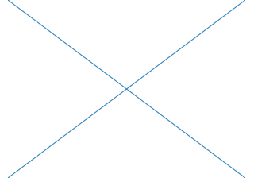
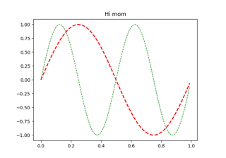
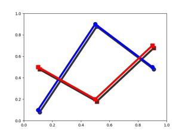

Miscellaneous#


Coords Report



Adding lines to figures

Findobj Demo


Building histograms using Rectangles and PolyCollections
Building histograms using Rectangles and PolyCollections



Set and get properties

SVG Filter Line


transforms.offset_copy